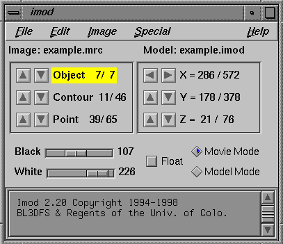
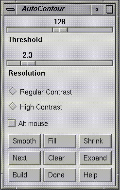

Chapter 1: Installation
Setting Up a PC to Run IMOD.
The recommended configuration for running the IMOD software is:
Processor: Intel Pentium III or 4 or AMD Athlon
Video Card: Nvidia Geforce 256, GeForce 2 MX, Geforce2 GTS, Geforce2 GTS
Ultra, GeForce3, GeForce 4 (64 MB or 128 MB cards preferred)
Minimum memory size: 256MB
Minimum disk size: 10 GB
Operating System: Red Hat 7.1-7.3 Workstation class installation. In order
to use over 800 MB of memory, you should be running at least Red Hat 7.1.
OpenMotif 2.1.30 from the Red Hat 7.1 PowerTools CD, or OpenMotif 2.2.2
plus the 2.1.30 compatibility library
Nvidia Linux device drivers and OpenGL libraries from
Nvidia, at least version 1541 or higher.
For Red Hat 7.1 or 7.2, a version of the OpenGL library libGLU.so based on the
SGI sample implementation, available through links at
Mesa
The steps required to install the Nvidia card and drivers are somewhat tricky. These instructions are based on our current procedures and may be helpful. In addition, here is a sample of a /etc/X11/XF86Config-4 file from Red Hat 7.1.
If you are running a system lower than Red Hat 7.3, you are encouraged to get a copy of libGLU.so based on SGI's source code because the version from Mesa distributed with Red Hat 7.1 is missing some functions, which will make imod crash if you attempt to display an object in "Contour-Fill" mode in the model view window. Earlier versions of the Mesa libGLU had a bug which sometimes crashed imod in this display mode. As of IMOD 2.50, Imod has been compiled without the workaround that prevented these crashes, another reason to get a better libGLU. See our Nvidia instructions for details.
To run Imod, you need version 2.1 of OpenMotif. However, future releases will probably be built against version 2.2. You may wish to install or upgrade to version 2.2 plus the the 2.1 compatibility libraries. See our Nvidia instructions for details.
Red Hat 7.1 also shipped with a version of the MTRR module that broke the accelerated graphics support for AMD processors. For proper graphics performance, you may need to upgrade your kernel. Here are some simplified instructions for installing an upgrade kernel with Nvidia drivers. In addition, here are some instructions based on our experience in building kernels for Red Hat 7.1.
Versions earlier than IMOD 2.6.4 recommended replacing a csh
startup file, /etc/profile.d/colorls.csh, because of problems
with the subm alias, but this is no longer necessary
if the alias has the -ef flag on
csh (see the Tomography Guide).
Several window manager settings are also needed to keep imod from bogging down when it is displaying large images or complex models. This guide for novices to the Sawfish window manager describes the important settings and some other helpful ones when using imod.
As of IMOD 2.6.0, programs have been compiled to work with files bigger than 2
GB. However, the tcsh 6.10 distributed with Red Hat 7.1-7.3 has
problems with large files,
and some of the IMOD shell scripts will fail with large files under this tcsh.
For doing
tomography with large files, you need to upgrade to tcsh 6.11,
which is available as an
rpm.
Installing IMOD.
All of the IMOD programs are available via the IMOD Download Page The distribution will be compressed using the gzip program and bundled together using the Unix tar program.
gunzip imod.tar.gz
tar xvf imod.tar
These steps should create a directory such as imod_2.41/ that
contains all of the IMOD programs, libraries and manuals.
sgiinstall,
suninstall,
or pcinstall,
which can be "sourced" to set the variables, or modified slightly and
incorporated in your .cshrc or a system-wide cshrc
file. There is also a version for bash users, bashinstall.
- Copy or move the IMOD distribution to the place you would
like to keep it. A good place to rename IMOD would be the
directory
/usr/local/IMOD; however, any directory will do.
mv imod_2.41 /usr/local/IMOD - This example will use /usr/local/IMOD as the installation
directory and assume that csh is the users shell.
The following three commands need to be issued.
-
Set the environment variable that points to the location of the
IMOD directory.
setenv IMOD_DIR /usr/local/IMOD -
Set the environment variable that points to the location of the
IMOD plugin directory.
setenv IMOD_PLUGIN_DIR $IMOD_DIR/lib/imodplug -
Set your path so that when you type in IMOD commands the
system can find the command.
set path = ($path $IMOD_DIR/bin) -
If you already have your LD_LIBRARY_PATH set, append the IMOD library
directory otherwise create the new LD_LIBRARY_PATH. If you have an Irix 6.5
version, you need to set LD_LIBRARYN32_PATH as well.
An automated way to do this is with the following csh script.
if ($?LD_LIBRARY_PATH) setenv LD_LIBRARY_PATH $IMOD_DIR/lib:$LD_LIBRARY_PATH else setenv LD_LIBRARY_PATH $IMOD_DIR/lib endif if ($?LD_LIBRARYN32_PATH) setenv LD_LIBRARYN32_PATH $IMOD_DIR/lib32:$LD_LIBRARYN32_PATH else setenv LD_LIBRARYN32_PATH $IMOD_DIR/lib32 endif
-
Set the environment variable that points to the location of the
IMOD directory.
- On an SGI, you may also wish to install the manual pages onto
your system. (On the PC, Linux magically searches for manual pages based
on your path setting.)
All manual pages are in the directories IMOD/man/cat1 and IMOD/man/cat5.
An automated way to do this is with the following csh script.
if ($?MANPATH) setenv MANPATH $IMOD_DIR/man:$MANPATH else setenv MANPATH $IMOD_DIR/man endif
TIFF Library Support.
The imod program is now able to read TIFF files if the librarylibtiff.so
is available. Versions compiled for IRIX 6.5 and the PC under Linux assume
that the library is available; the version for IRIX 6.2 assumes that it is not.
If you are trying to run a version that is compiled for the library but the
library is not on your system, imod and several other programs
will not run until
you rename a dummy library, nolibtiff.so, to
libtiff.so. From the top IMOD
directory, do the following:
cd lib mv nolibtiff.so libtiff.soand, on the SGI only, continue with:
cd ../lib32 mv nolibtiff.so libtiff.so
Conversely, if you have the 6.2 version and do have the library (which you
can obtain from
SGI), then you need to
remove or rename the dummy libtiff.so in the
IMOD/lib directory.
Fast Backprojection Support.
The Tilt program now contains a fast backprojection algorithm developed by Gregory Beylkin and Kristian Sandberg at the University of Colorado. This method produces reconstructions 1.5-2.5 times faster, depending on the size of the slice being reconstructed (the larger, the better). It works when there is tilt around the X-axis but not with local alignments. To take advantage of the algorithm, you need a license to use the USFFT library, which is commercial software for doing unequally spaced FFTs. A license is free for non-profit organizations. To obtain a license, contact David Mastronarde with a request and a description of your institution. Once you have the license, you need to set environment variable USFFT2_LICENSE_FILE to the point to the license file. If the file is "license.clo" and you place it in the top IMOD directory, the command would besetenv USFFT2_LICENSE_FILE $IMOD_DIR/license.clo
The program will use standard backprojection if there is no license.
Chapter 2: Getting Started.
The initial problem will be getting data into a format usable by the IMOD programs. If you are having problems getting your data into a format usable by IMOD contact us for help.The Image Data Format.
All of the IMOD programs use the MRC image file format. We have utility programs available for converting TIFF files, SGI rgb files and raw data into the MRC file format.
Use the program
tif2mrc to convert a series of TIFF image
files into a single MRC image file. The tif2mrc program can
also subtract a background TIFF image if the -b option is used.
The following example will create a MRC file from a list of TIFF files
(cell01.tif, cell02.tif ...) and will subtract the background image
background.tiff from each of the image files.
tif2mrc -b background.tif cell??.tif cell.mrc
See the
tif2mrc manual page
for more information on how to use
tif2mrc.
The program raw2mrc is used to convert raw image data into the mrc format. This program can take a file of 8 or 16 bit integers, or IEEE float values and convert them into an MRC image file. In MRC files, the data start in the lower left hand corner of the image, with the data stored in rows. If the final MRC image is upside down use the -f option in the initial conversion or use the program clip to flip the image back.
As of IMOD 2.6.20, our image file format was changed to conform to the MRC image2000 standard. Programs now read files in either the new or the old format and write files in the new format. Older versions of IMOD will interpret these new files as having strange origin values. If you are running an older version and you have to work with one of these files (or any MRC file conforming to the new standard), you can fix the origin values with:
alterheader filename org 0,0,0 done
The Model Format.
If you already have a 3-D model and wish to view it within the IMOD
model viewing program, imodv, you will need to convert
the file into the IMOD format. See the IMOD model file format
ASCII and
binary specifications
if you wish to write your own conversion program.
Model files from the HVEM3D program can be converted to the IMOD
model format using the
rec2imod
program.
The IMOD model format can be either binary or ASCII. Currently supported machines can all read and write binary model files interchangeably, so the main use of the ASCII format would be to access the data for analysis or conversion by other programs. To convert a binary IMOD file (binary.imod) to an ASCII IMOD file (ascii.imod) use the imodinfo command :
imodinfo -a binary.imod > ascii.imod
or
imodinfo -a -f ascii.imod binary.imod
will both create an ASCII model file from the binary.imod model.
There exists an older model format which was used on our VaxStation running the WIMP program. The programs written in Fortran use the WIMP format internally. They will read models in either WIMP or IMOD format and output models in IMOD format.
Chapter 3: Aligning Images.
There are three general methods for obtaining alignment transforms: manual adjustment of transformation parameters, solving for a transform from a set of fiducial points that correspond between two sections, and automated search for the best fit between two images.
Manual Image Alignment
The program midas is used for manual alignment or manual adjustments to automated alignment of images.Midas can be used to create a transform list or to edit an
existing list;
it can work with either "f" or "g" transform lists.
To get a "g" transform list from an "f" transform list use the
xftoxg
program. xftoxg has options to
leave long term trends in the data, which are invoked by default when
you call it with the xf2xg shell script.
Image Alignment using Fiducial Markers.
The program xfmodel will create a list of xf transforms from a model containing fiducial points. See the chapter on Building Models to see how to make models.Steps and Programs used in fiducial marker alignment.
imod: Creates a model in which points in each contour are placed on adjacent sections that mark the same area on both sections. Note that a single contour corresponds to a single fiducial marker, and the contour contains a point on each of the sections where the marker appears. These are contours that pass between sections rather than being confined to a single section.xfmodel: Creates a "f" transform list.xftoxg: Creates a "g" transform list, leaving in long term trends in the data.newstack: Creates an aligned image stack.
Automatic Image Alignment
Several programs are used for automated image alignment. The programs used are xfalign, xftoxg, midas and newstack. Xfalign is a csh script that generates a "f" transform list using the xfsimplex program. It can prefilter images using the enhance program. It also has an option to get an initial alignment of the images by cross-correlation, in case images are not already roughly aligned.Steps and programs used in automatic image alignment:
- Create a "f" transform list by using the xfalign program.
xfalign cell.mrc cell.xf
Expect the alignment for each section to take on the order of a minute to compute. The file, cell.xf, will contain information on how to align adjacent images to one another. - The next step is to analyze the the file cell.xf and
the transforms needed to bring all of the images in alignment with
on another.
Use the
xf2xgshell script, an interface to the xftoxg program, to create a global "g" transform list from the "f" transform list:xf2xg cell.xf - The output file from that command, cell.xg, should contain all of the
information needed to
make new aligned images from the old unaligned images.
Use the
newstack program to create the
new aligned images. The
newst shell script acts as a front end to
the newstack program and allows for easier command line options.
The following example will create
an aligned file newcell.mrc from the old cell.mrc image file.
newst -xform test.xg test.mrc newtest.mrcIf the automatic alignment is not always correct, it can be adjusted with the midas program. Start the program with:
midas test.mrc test.xfA window will open up and you can view the alignment between any given pair of adjacent images. After making adjustments for any sections that are out of alignment, save the transforms and exit the program. Then rerun the
xf2xgandnewstcommands shown above.
For more background and explanation of the topics in the Chapter, see the guide to serial section alignment.
Chapter 4: Building Models
Models can be built automatically with the program
imodauto
or can
be built interactively using imod.
Models generated with
imodauto
can be edited with the
imod
program.
Only images with a high signal due to
selective stain are currently candidates for
imodauto
Most models will be generated using
imod.
Model Organization
It is helpful to understand the model data structure before trying to create a model. A model is basically a collection of points that refer to or mark interesting locations in an image. These points can be connected and put into groups that are called contours. It is common that one would like to be able to mark more than one type of object in an image. This is facilitated by allowing contours to be grouped together into separate objects. Each object is given its own name and all contours in the object share common attributes such as color.
Model Layout
|
Model header: includes image name, pixel size and zscale. |
||||||||||||||
|
|
|
||||||||||||
Interactive Model Building
To create a model for a MRC image file called
example.mrc run the following imod command.
This command will cause a new model to be created, ready to edit.
imod example.mrc
If a model has already been saved but needs further editing run the
command
imod example.mrc example.imod
When this command is run a window similar to the one below will open up. A secondary window containing the image of the image file and model file is opened after the data has been loaded.
The Imod Information Window
The Imod Information Window above is where information about the model and current image point are displayed. The name of the image file and the name of the current model file are shown near the top of the window. The main control menus for imod are also available from within this window.
The model controls are on the left side of the window. These controls show the current object, contour and point. The arrow buttons can be used to change the current object, contour or point. The current model being edited above has 7 objects; the 7th object is currently selected. The 7th object has 46 contours and the 11th contour is currently selected. This contour has 65 points and the 39th point is the current point.
The image position controls are on the right side of the window. These controls show the the image dimensions are 572 by 378 and that there are 76 sections. The current model point is at the location (286,178) with the origin at the lower left corner of the image. The current section is number 21. The arrow buttons can be used for fine tuning the location of the current point.
There are some additional controls at the bottom of the window. The "Movie Mode" and "Model Mode" controls allow a user to select one of the two modes. When "Movie Mode" is selected then all of the model edit controls are disabled. The mouse controls will cause the image to movie back and forth. When "Model Mode" is selected the mouse controls will edit the model. The table below gives an overview of the mouse controls with each mode.
| Mouse Button | Movie Mode | Model Mode | ||||
|---|---|---|---|---|---|---|
| Left | Select position or drag mouse to pan image. | Attach to nearby model point or drag mouse to pan image. | ||||
| Middle | Movie image forward, or stop movie. | Add new model point or drag mouse to add several points. | ||||
| Right | Movie image backward, or stop movie. | Modify the current model point or drag mouse to modify several points. | ||||
The two sliders reading "107" and "226" are adjustments to the display's black and white levels. Moving these sliders will adjust the contrast and brightness of the displayed image, although on a PC the intensities won't change while you are dragging the slider, only when you drop it. If the "Float" control is checked, the program will adjust the black and white sliders automatically when you change from one section to another in an attempt to maintain a constant contrast and brightness.
The bottom panel will contain additional information and status messages. You can expand the window vertically to see more of the information at once.
The Imod Zap Window

Some of the other controls at the top of the Zap window are the Checkerboard button, the Lock button, the Centering button, the Insert button and the section selector.
- The Checkerboard button will toggle between fast and slow drawing methods.
- The Lock button is used to keep the image from centering on the current point. When the lock is closed, the image will not move when the current model point changes, but it can be moved with the mouse or the PageUp and PageDown keys. When the lock is open, the image may automatically pan to the current point, depending on the setting of the Centering button. This panning does not happen when the current point is selected or added by a mouse button.
- The Centering button toggles between two centering modes. In one mode, the image will be centered on the current point only if it falls near the edge of the window, that is, outside of a central box. (Thus, the icon shows one box inside another.) In the other mode, the image will be recentered on the current point each time you change the current point. (The icon shows a point inside the outer box. Sorry, this button does not appear in the example shown above.)
- The Insert, or Modeling Direction, button toggles between inserting points before and inserting points after the current model point.
- The section selector shows the value of the current section being viewed in the Zap window. You can change sections by selecting this field and entering a section number.
Editing the model in the Zap Window The left mouse button can be used to select a point for editing. The middle mouse button is used to insert model points. The right mouse button is used to alter the position of the current model point.
Automated Model Building
imod has controls for automatically creating contours. The Auto Contour Window can be opened up by selecting the Edit->Contour->Auto menu item in the Information Window
The Auto Contour Window

See also: Manual pages for
imod and
imodauto.
Chapter 5: Viewing Models
Once a model has been made one can get quantitative information about the objects and contours within the model using the imodinfo program. One can also view the model in an interactive renderer using imodv. It is also possible to use a conversion program to convert the IMOD model into other formats for use in other 3rd party programs, such as photo-realistic renderers or web browsers.Interactive Viewing
The main interactive viewing program for IMOD model files is the imodv program. The viewer can also be run within the imod image visualization and modeling program by selecting the "Model View" item from the Image menu in the Imod Information Window.Putting a skin on model data.
Skinning is the name used for calculating a three-dimensional surface from contour data. This surface, once calculated, is represented by a mesh of triangles that can be stored within each object. If any contour points within that object are edited then the mesh for that object must be recalculated in order for it to match the contour data. The imodmesh program must be used to calculate the mesh from the contour data within a model since the skinning calculation cannot be done in real time with current computer processing.Here are some example uses of imodmesh, assuming that the model file is titled cell.imod.
All meshes by default have a hole at the top and bottom of the data;
the program cannot know a priori if the hole should be there or not.
The -C in the command below tells imodmesh to fill in the holes at
the ends or "Cap" them off.
imodmesh -C cell.imod
Sometimes the mesh data structure can get so large that interactive
viewing is very slow. The -r or -R options can be used to make a mesh
with a lower resolution. In the example here, points on the mesh
will be no less than 20 pixels apart.
imodmesh -C -r 20 cell.imod
The -R option can give a more faithful rendition of a complex object because it
removes only points that are within a certain distance of the remaining line
segments, thus preserving the shape of curves. In this example, points will
be removed, but the surface defined by the mesh will always be within 0.75
pixel of the original data.
imodmesh -C -R 0.75 cell.imod
If you make a mistake, don't worry, a backup file called
cell.imod~ was made. You can also erase all of the mesh data by
using this last example.
imodmesh -e cell.imod
Quantitative Information.
In order to get accurate information the fields in the model header have to be set properly. To adjust the fields in the model header select the Model Header menu item from Edit menu in the Imod Information Window. The model edit dialog will pop up. The "Z-Scale" and the "Pixel Size" fields will be used for calculating length, surface area or volume from object, contour or mesh data. The Pixel Size field should contain the value that describes the dimensions used in digitizing an image along with the units. Units can be one of the following; nm, um, mm, m, km. For example, you could enter "0.015 um" or "15 nm". The Z-Scale is the ratio of the thickness between successive images to the Pixel Size.Selecting the Edit->Object->Info or Edit->Contour->Info menu item from the Imod Information Window will cause the quantitative information to be printed out in the bottom panel of the Imod Information Window.
Use the
imodinfo command to get basic information
from a model and print it out to a terminal or file.
imodinfo cell.imod
# MODEL cell.imod
# NAME A little cell
# PIX SCALE: x = 1
# y = 1
# z = 9.17
# PIX SIZE = 0.00654
# UNITS: um
OBJECT 1
NAME: spindle pole
5 contours
object uses closed contours.
color (red, green, blue) = (0, 1, 1)
CONTOUR #1,2,0 16 points, length = 0.464513, area = 0.0134249
CONTOUR #2,2,0 14 points, length = 0.458311, area = 0.0125642
CONTOUR #3,2,0 8 points, length = 0.200755, area = 0.00277481
CONTOUR #4,2,0 13 points, length = 0.313501, area = 0.00664029
CONTOUR #5,2,0 9 points, length = 0.232374, area = 0.00272134
Total volume = 0.00228646
Total contour cylinder surface area = 0.10012.
Total mesh surface area = 0.0349499.
Output to other model formats.
IMOD models can be converted to a few other 3rd party formats. The formats and the programs used to convert to them are listed below.- imod2vrml converts to the Virtual Reality Modeling Language 1.0, see the VRML Repository for more information. This is the format used in many web browsers for viewing 3D models.
- imod2rib converts to the RIB format used by Renderman. There is a set of public domain
rendering tools at the
Blue Moon Rendering Tools Home Page.
The Renderman (R) Interface Procedures and RIB Protocol are: Copyright 1988,1989, Pixar. All rights reserved. RenderMan (R) is a registered trademark of Pixar. - imod can write files in the SYNU format used by the synuview program available from the National Center for Microscopy and Imaging Research (NCMIR). See the Synuview FAQ
- imod can write files in the NFF format used by scian.
- imod2meta is supposed to be able to write files in the Quick Draw 3D Metafile format, but was recently reported as not working. This is the standard for Macintosh computers. See the Quick Draw 3D Home Page for more information.